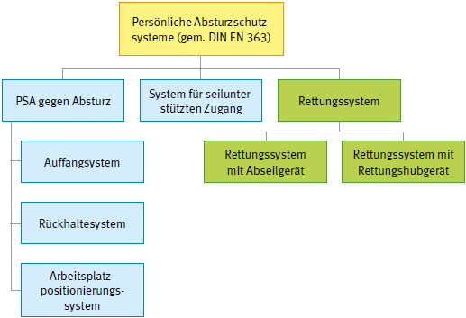

Rettungssysteme sind ein Teilbereich der persönlichen Absturzschutzsysteme.
Sie sind persönliche Absturzschutzsysteme, durch die eine Person sich selbst oder andere Personen retten kann und die einen freien Fall verhindern. Mit Rettungssystemen können Personen aus einer Notlage beispielsweise durch Auf- oder Abseilen gerettet werden.
Ausführliche Informationen zu PSA gegen Absturz enthält die DGUV Regel 112-198 "Benutzung von persönlichen Schutzausrüstungen gegen Absturz", zu Systemen für seilunterstützten Zugang die DGUV Information 212-001 "Arbeiten unter Verwendung von seilunterstützten Zugangs- und Positionierungsverfahren".
